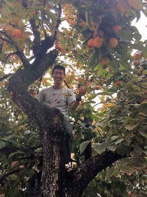

|  | CHUA YingZhiHonours Student (Alumnus)
Email: a0134133(AT)u.nus.edu |
Honours Project
My research focuses on scleractinian corals that reside on seawalls in the subtidal region. Diversity and abundance of corals differ greatly along different seawalls, and my research will focus on identifying the factors driving these differences.
Coastal development for a small island-nation like Singapore is inevitable. However, it is crucial that we do not disregard the organisms that reside in our marine habitat, and develop at the expense of these flora and fauna. It is of paramount importance that environmental qualities are not compromised as a result of human development. Instead, conditions should be maintained or provided such that other life forms are allowed to thrive and flourish alongside our development. In the long run, I hope that the results from my research can aid in future coastal development of Singapore, to minimise impacts on these amazing animals.
Background
I am currently pursuing my undergraduate degree in the Bachelor of Environmental Studies in NUS, specialising in Environmental Biology. I believe deeply that public awareness and involvement in environmental issues is pivotal, and I am especially enthusiastic to engage with members of the public regarding environmental issues. My interest lies in environmental conservation, and I hope to bring about significant contributions to future conservation efforts.